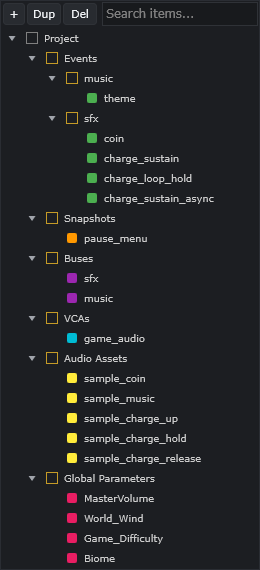

Capítulo 4 — Navegador do projeto
O painel esquerdo é o inventário completo do seu projeto. Tudo o que existe no seu jogo — eventos, snapshots, buses, VCAs, arquivos de áudio e parâmetros globais — é criado, organizado e buscado aqui.
Antes de criar ou reestruturar os itens do seu projeto, compreenda o papel de cada raiz: leia sobre o desacoplamento de eventos e parâmetros em Fundamentos: Eventos e Parâmetros e sobre a topologia de barramentos, VCAs e snapshots em Fundamentos: Buses, VCAs e Snapshots.

- 1Abas do Navegador (
Events | Snapshots | Buses | Assets): alterne entre as quatro categorias principais. A abaBusesagrupa os barramentos hierárquicos e a subseçãoVCAs. - 2Busca e Menu de Contexto: digite no campo de busca para filtrar a árvore e use o clique direito (ou F2, Ctrl+D, Del) para criar, renomear, duplicar, importar áudio ou excluir itens.
- 3Raiz
event:/: todos os eventos jogáveis. Use barras/no nome (ex.:SFX/Passos) para criar subpastas automaticamente. - 4Rodapé
PROJECT PARAMETERS (N): lista fixa inferior exibindo parâmetros globais e seus domínios reais, com seleção direta no Inspetor e menu de contexto.
Como ler a árvore
Clique na seta de uma categoria para ver seus itens. Em Events, um clique no evento prepara a timeline e o transporte para aquela seleção. Em Buses, um clique abre as propriedades do canal no Inspetor. O campo de busca reduz as linhas visíveis e preserva a estrutura que ajuda a localizar o item. Se uma pasta sumir depois de renomear algo, limpe primeiro o filtro.
Pastas da árvore derivam dos caminhos dos itens. Elas organizam o projeto e são independentes da pasta assets/ no Explorador e do roteamento de áudio.
As 6 Raízes do Projeto Explicadas
| Raiz | Cor na Árvore | O que fica aqui |
|---|---|---|
Events (event:/) | Ciano | Efeitos sonoros, músicas e diálogos que o jogo dispara. |
Snapshots (snapshot:/) | Roxo | Cenas de mixagem temporárias (ex.: snapshot:/Pausa, snapshot:/DuckMusic). |
Buses (bus:/) | Âmbar | Grupos de roteamento (bus:/ Master, bus:/SFX, bus:/Music). |
VCAs (vca:/) | Verde | Controles mestres ligados a múltiplos Buses (ex.: controle de volume do menu). |
Audio Assets | Cinza | Arquivos e amostras cadastradas no projeto (WAV, OGG, MP3 e FLAC em assets/). |
Global Parameters | Cinza | Parâmetros compartilhados pelo jogo inteiro (ex.: HoraDoDia, VidaJogador). |
Renomear um item sem perder a referência
A árvore mostra apenas a última parte de muitos nomes. Em event:/sfx/coin, a linha coin aparece dentro de sfx. O Studio e o jogo identificam o evento pelo caminho completo, incluindo o prefixo event:/. Ao mudar sfx/coin para ui/coin, a árvore passa a mostrar o item em outra pasta. O destino de áudio continua definido por Bus Route.
- Trabalhe em uma cópia de
example_project. Abra o JSON e expanda Events e sfx. - Clique na linha coin. Com a árvore em foco, pressione F2 ou abra o menu de contexto e escolha Rename (F2).
- Na janela Rename Item, substitua o texto completo por
event:/ui/moedae confirme com OK. Preserveevent:/e escolha um caminho ainda livre. Para voltar, use Cancel antes de confirmar ou Ctrl+Z depois. - Confira a nova linha em Events → ui. Se o filtro estiver em
coin, limpe-o para encontrarmoeda. Selecione o item e confira o novo caminho no Inspetor. Dê Play e confirme que o som continua sendo o mesmo. - Salve e publique. Se a Unity já referenciava
event:/sfx/coin, copie o novo banco e catálogo e altere o Event Path ou a string do script paraevent:/ui/moeda. Teste o disparo novamente.
| Item | Exemplo de novo nome | O que inspecionar depois |
|---|---|---|
| Evento | event:/ui/moeda | Instrumentos que disparam o evento, listas de VCA, campos da Unity e scripts. |
| Snapshot | snapshot:/menu/pausa | Comandos que ativam ou desligam o snapshot e caminhos usados no jogo. |
| Barramento | bus:/efeitos | Rotas dos eventos, barramentos filhos, alvos de snapshot, VCA e sidechain. bus:/ identifica o Master. |
| VCA | vca:/opcoes/efeitos | Campos e scripts que buscam o controle pelo caminho. |
| Audio Asset | moeda_curta | O identificador usado por clipes e playlists muda. O caminho do WAV em File continua sendo o do arquivo de origem. |
| Parâmetro global | IntensidadeDoJogo | Condições e automações ligadas ao parâmetro e o nome enviado por SetGlobalParameter. |
O Studio atualiza referências internas que reconhece. Outros projetos, bancos antigos e dados da Unity precisam ser revisados à parte. Para mudar o nome da pasta ou o nome do projeto publicado, siga Salvar, duplicar ou renomear um projeto.
Criar, duplicar e excluir
O botão + oferece evento, snapshot, barramento, VCA e parâmetro global. Selecione o novo item para editar suas propriedades. Para testar duas versões do mesmo som, selecione o evento, clique em Dup ou pressione Ctrl+D, encontre a cópia na árvore e renomeie-a. Mude o pitch da cópia e alterne entre as duas audições. Os eventos podem apontar para o mesmo áudio de origem.
Para remover a cópia, selecione a linha, clique em Del e confira o caminho na confirmação. Revise as dependências de qualquer item usado por outros eventos. Se a exclusão foi acidental, use Ctrl+Z antes de salvar e publicar novamente.
Encontre um evento e seu áudio de origem
- No projeto de exemplo, procure
coinno filtro. Selecioneevent:/sfx/coinem Events para ver sua timeline. - Limpe o filtro e procure
sample_coinem Samples. O sample identifica o arquivoassets/coin.wav. O evento define como reproduzi-lo. - Volte ao evento e compare com
event:/music/theme. Os dois têm clipes e são roteados a barramentos diferentes.
Importação de áudio (WAV, OGG, MP3, FLAC) e Drag-and-Drop
O OpenAudio Studio suporta nativamente a importação e decodificação de múltiplos formatos de áudio:
- Formatos Suportados:
.wav(PCM),.ogg(Vorbis),.mp3(MPEG Layer 3) e.flac(lossless). - Ação "Import Audio...": Clique com o botão direito sobre a categoria Audio Assets (ou qualquer amostra existente) e selecione Import Audio..., ou use o botão + no topo do painel. A caixa de diálogo do sistema operacional permite selecionar um ou vários arquivos simultaneamente.
- Drag-and-Drop Direto: Arraste um ou múltiplos arquivos de áudio do gerenciador de arquivos do sistema (Windows Explorer, Finder, etc.) e solte-os sobre o painel do navegador de assets. O Studio copia automaticamente os arquivos para a pasta
assets/do projeto, previne colisões de nomes adicionando sufixos numéricos quando necessário e cadastra os novos samples no catálogoproject.json. - Undo/Redo Total: Toda importação de asset é integrada ao histórico do projeto (Ctrl+Z desfaz o cadastro).
Termos do navegador
- Raiz
- Grupo superior que reúne itens da mesma categoria.
- Caminho do evento
- Identificador usado no Studio e no código do jogo. Preserve a grafia ao copiá-lo.